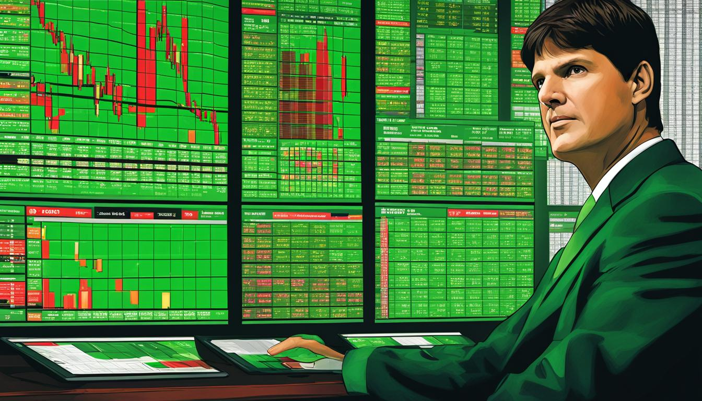

Trading stocks vs Investing stocks
Investing

A stock is a security that represents a fractional ownership in a company. When you buy a company's stock,
you're purchasing a small piece
of that company, called a share.
Investors purchase stocks in companies they think will go up in value. For an investor it is more seen to buy
and hold stocks for years.
Investors usually are interested in a companies long term goals. gross annually, what products are the company
producing, will the company last long term? it is very important to invest in companies that seek growth over
the
long term because they better there company is, the more people will be willing to invest in shares which drive
the stock price up over time. from a long term perspective it is different tax breaks incentives as well.
For example, if i buy 1,000 dollars of Apple stock in Feb. 7th 2022. one year and one day from the purchase date
you will not have to pay any taxes on any gains that may have occurred. Investing has its other great benefits
to it as well. One of these great benefits is called a dividend.A dividend is a company's payment, based on
profit,
to the people who own stock in the company. Dividend payments are based on the class of the stock, the stock
price
and the number of shares an investor has in a company. Dividends are frequently paid in cash to investors but
may come in other forms of compensation.
investors tend to look at the fundamentals when it comes to looking to buy or sell there shares.
Trading

Trading is different from investing because the time of buy and sell is shorter and in a certain time
frame based on the trader.
Day Trading
Day trading is a type of speculative investing that involves traders buying and selling the same stock by the end of the day. In order to be considered a offical day trader you must have 25k in your account. Some day traders identify specific market catalysts that tend to generate highly volatile price reactions. These catalysts are typically special events such as earnings reports, company news announcements, or even buyout deals and partnerships. Because the underlying fundamental valuation metrics for most stocks rarely change within a matter of minutes or hours, day traders often use technical analysis to determine potential entry and exit points for a trade. Technical analysis relies on identifying patterns in market data to predict future price movement based on market tendencies. Day traders typically focus on highly liquid stocks because those stocks allow traders to enter and exit positions quicklySwing trading
Swing trading is a style of trading that attempts to capture short- to medium-term gains in a stock (or any financial instrument) over a period of a few days to several weeks. Swing traders primarily use technical analysis to look for trading opportunities. typically, swing trading involves holding a position either long or short for more than one trading session, but usually not longer than several weeks or a couple of months. This is a general time frame, as some trades may last longer than a couple of months, yet the trader may still consider them swing tradeScalp trading
Scalping is a trading style that specializes in profiting off of small price changes and making a fast profit off reselling. In day trading, scalping is a term for a strategy to prioritize making high volumes off small profits. Scalping requires a trader to have a strict exit strategy because one large loss could eliminate the many small gains the trader worked to obtain. Thus, having the right tools—such as a live feed, a direct-access broker, and the stamina to place many trades—is required for this strategy to be successful.What is More benefical to your life?
Do you have a regular 9-5 job? if so, swing trading would be the best trading style for you. With your busy work schedlue you woukld not have time to be in front of the trading screens all day. With swing trading you only have to check the markets 3 times a day. The Stock Market opens up at 8 am(ET). and closes at 4pm(ET). Than around lunch time would be another great time to see how markets are moving but it is not required.Types of trading charts and how to analyze them
Three Types of Stock Charts

A stock chart is a graph that displays the price of a stock—or any type of
investment asset—over a period of time. It typically shows the current
price, historical highs and lows, and trading volumes
on a stock chart
Price charts visualize the trading activity that takes place during
a single trading period (whether it's five minutes, 30 minutes, 4Hour,
one day, and one week). Generally speaking, each period consists of
several data points, including the opening, high, low, and/or
closing prices. When reading stock charts, traders typically
use one or more of the three types—line, bar, and candlestick.
Line Chart
Perhaps the most basic price chart is the line chart. It plots a
single line that connects all the closing prices of a stock for a certain time interval.
It's simple to follow, but the line chart may not tell traders much
about each day's activity. It will, however, help traders see trends
easily and visually compare the closing price from one period to the next.
Because many brokerages place the valuation of an account on the
closing price, this method has some value when correlating a stock's trend or overall performance to the market without being too concerned about intraday fluctuations.
Bar Chart
The bar chart is another way to chart price activity.
Bar charts help traders see the price range of each period. Bars may
increase or decrease in size from one bar to the next or over a range of
bars. Notice how the bars expand and contract between periods of high and
low volatility. As the market becomes increasingly volatile, the bars become
larger and the price swings further. As the market becomes quieter, price typically contracts into smaller bars.
The fluctuation in bar size is because of the way each bar is constructed.
The vertical height of the bar reflects the range between the high and low
price of the bar period. The price bar also records the period's opening
and closing prices with attached horizontal lines; the left line represents the open, and the right line represents the close.
Candle stick chart
The candlestick chart is a variation of the bar chart. Candles help
visualize bullish or bearish sentiment by displaying distinctive
"bodies" that are green or red, depending on whether the stock
closes higher or lower than the open. The body represents the
range between the opening and closing prices of the time intervals;
the high and low prices are called the wick or shadow (see the chart below).
Candles help analysts see how prices move in a trending market.
In a normal bull market, there might be more clusters of green
candles than red candles, while the reverse is true for a bear
market. Certain combinations of candles create patterns that traders may use as entry or exit signals.
Whats the difference between a bar chart and a candlestick chart?

Bar charts and candlestick charts show the same information,
just in a different way. Candlestick charts are more visual due
to the color coding of the price bars and thicker real bodies.
Highlighting prices this way makes it easier for some traders to
view the difference between the open and close
Candlesticks
In stock trading, a candlestick is an illustration of a stock
price’s daily fluctuation. The length of the bar tells you the
difference between the opening and closing price. The lines extending
beyond the bar, sometimes called shadows, wicks, or tails, show whether
or not the price extended higher or lower than the open or close before
retreating. The color of the candlestick tells you if the stock closed
above or below its opening price. Green candle sticks represent that
bulls are in control. Red candlesticks represnt that the bears are in
control.
These candlesticks originated in Japan more than two centuries ago.
Munehisa Homma used drawings to indicate how much the price of rice
fluctuated during a day. It wasn’t until the 1980s that these drawings
became known in the West. Steve Nison introduced them as “Japanese candlestick
charting techniques” in a book by the same name. The idea behind candlesticks is
that patterns emerge, which a sophisticated trader can spot. Those patterns supposedly
signal trends, reversals, and breakouts (prices outside of a normal volatility range)
that are about to occur.
What does a candlestickk show?
A candlestick theoretically shows the attitude of the current
marketplace regarding a stock or other security. A long body
(the distance between the opening and closing price) indicates the direction the stock price is moving.
A tall green bar signals that the bulls are in charge,
pushing prices up. A tall red bar shows pessimism ruling the market,
pulling prices down with bearish sentiment. Short bodies suggest that
the bulls and bears are relatively balanced. That could indicate that
momentum is slowing down. For example, a short-bodied candle coming after a
series of tall green candles might suggest the price is reaching a resistance level.
The shadows (the lines above and below the body) also provide essential information.
When a shadow forms, it means that traders tested a higher or lower price, which gets rejected.
The length of a top shadow is the distance between the highest price of the day and the closing price.
That means that the higher price couldn’t sustain itself, and it fell to
the closing price. For instance, a stock price might have gone up to
$25 for a few hours, then fell back to $23, leaving a $2 shadow.
The fact that the higher price was rejected might convey some important information.

Wait one sec! What does it mean to be Bullish or Bearish?

Bullish ~
When we think about how bulls attack their prey they like to swing their horns upwards to lift them off their feet. bullish stock is a stock that's rising in price. So, if a financial news show reports that most analysts in a survey think we're headed for a “bull market” in stocks, it means that those analysts believe that stocks will begin an extended uptrend, with prices rising consistently for a while.Bearish ~
When bears attack their prey, they like to swipe down to catch them. A bearish investor, also known as a bear, is one who believes prices will go down. Someone can be bearish about either the market as a whole, individual stocks or specific sectorsHow do we actually read a candlestick chart?
On a candlestick chart you will see multiple candlesticks moving,
sideways, up and down. amongst these moves we call these chart patterns.
stock candle sticks move in consolidation phases, uptrend phases,
and downtrend phases

Within these phases we have 2 types of patterns. We have a reversal
pattern and a continuation pattern. Within these patterns we have
supports and resistances.
Support
is essentially a floor for stock prices. It's a level where a stock trending
down stops sinking and reverses course. At some point, the sellers stop selling,
the buyers take control, and the stock starts rising again. At this inflection point, the stock puts in a low price that we call "support."
After a rally, if the stock reverses course once again and starts to come
back down to test the support level, it will likely require significantly
more conviction (i.e., volume) by sellers to penetrate the level and push down through support.
If the stock does not penetrate support, this only strengthens the support level and provides a
good indication for short sellers to rethink their positions because buyers will likely start to take control.
Resistance
is the exact opposite of support. It acts as a ceiling for stock prices
at a point where a stock that is rallying stops moving higher and reverses course.
Buyers will need more conviction to penetrate resistance levels in future rallies.
It's important to understand support and resistance are merely psychological levels,
but they can nevertheless be useful for traders who are developing a trading plan.